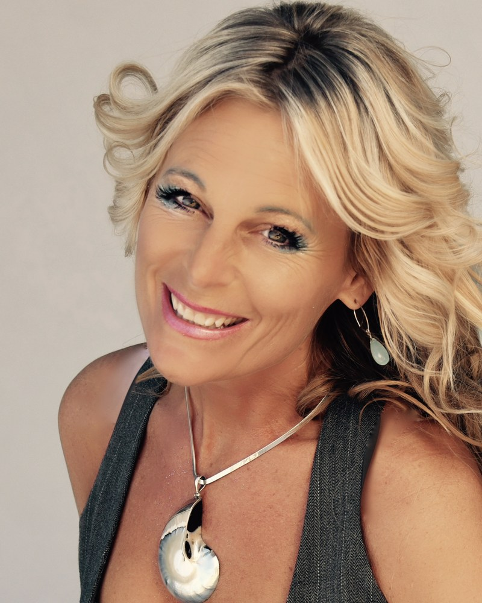

Academy of Brain Bliss, Kaslo, British Columbia, Canada

This presentation introduces a bio-acoustic framework developed through more than a decade of interdisciplinary research exploring the relationship between human vocal resonance, consciousness and the acoustic communication of whales and dolphins. Integrating bioacoustics, consciousness studies, embodied cognition and vibrational science, this work investigates how sound may function not only as a carrier of information but also as an organizing principle influencing coherence, perception and conscious experience. Central to this research is the identification of Acoustic Glyphs—recurring harmonic structures revealed through cymatic visualization as frequency-derived geometric forms that serve as symbolic representations of acoustic information. Emerging from analyses of human vocalizations and cetacean acoustic recordings, these glyphs demonstrate repeatable harmonic relationships that form the basis of a proposed bio-acoustic language extending beyond conventional models of communication. The framework draws upon more than ten years of longitudinal observational research, acoustic analysis, vocal resonance practices and documented case studies from the Academy of Brain Bliss and the book My Dolphin Doctor. Together, these sources document recurring observations associated with resonance, harmonic entrainment, frequency coherence and reported changes in subjective awareness, emotional regulation and well-being. These findings provide the basis for exploring a potential informational bridge between human vocal resonance and cetacean acoustic communication. Rather than viewing cetacean communication solely as a biological phenomenon, this research examines its harmonic organization as a model for investigating sound transference, conscious communication and the therapeutic potential of coherent vocal resonance. The concept of Acoustic Glyphs offers a unifying framework linking audible and inaudible frequencies, cymatic pattern formation and symbolic meaning, providing a novel perspective on how living systems may encode, transmit and respond to coherent acoustic information. By expanding the dialogue between bioacoustics and consciousness science, this presentation presents an evidence-informed framework that invites interdisciplinary collaboration and future empirical investigation. It offers a new perspective on the role of sound in consciousness, healing and cross-species communication, inviting us to reconsider whether the foundations of conscious intelligence begin not with language, but with resonance.
Mahalia Michael, MEPG is a medical musician, medical intuitive, consciousness researcher, author and founder of the Academy of Brain Bliss.
Recognized for her interdisciplinary work at the intersection of bioacoustics, human vocal resonance, consciousness studies, and nervous system regulation, she has spent more than a decade investigating the role of sound as a medium for communication, coherence, and human transformation.
Her research explores the relationship between human vocal resonance and cetacean acoustic communication, leading to the development of an original bio-acoustic framework centered on Acoustic Glyphs—recurring harmonic structures revealed through cymatic visualization as frequency-derived representations of acoustic information. Her work examines how these patterns may inform new approaches to vocal activation, resonance, and consciousness research.
Mahalia is the creator of Vocal Resurrection™ and Spinal Sonics™, evidence-informed methodologies that integrate vocal resonance, acoustic entrainment, breath and embodied awareness to support self-expression, nervous system regulation and cognitive optimization. Through the Academy of Brain Bliss, she has documented longitudinal case studies and guided thousands of individuals—including healthcare professionals, educators, entrepreneurs, artists, and wellness practitioners—through immersive vocal practices designed to cultivate resilience, creativity, emotional regulation and enhanced states of awareness.
She is the author of My Dolphin Doctor, which documents her observational research and case studies exploring the intersection of cetacean communication, human vocal resonance, and healing. Her original music, including the cetacean-inspired album Mermaid Island: Walking on Water, extends her exploration of sound as a vehicle for consciousness, coherence and transformation.
A medically designated Multi-Exceptional Profoundly Gifted (MEPG) innovator, Mahalia is dedicated to building bridges between bioacoustics, consciousness science, music and contemplative practice. Her work invites interdisciplinary dialogue on the possibility that sound is not only a means of communication but also a fundamental organizing principle through which living systems encode, transmit and respond to information.
Interviews:
https://www.brain-bliss.com/events
New York Times article:
https://nyweekly.com/health/mahalia-michael-healing-through-sound/
Academy of Brain Bliss Testimonies:
https://www.brain-bliss.com/testimonials
Blog:
https://www.brain-bliss.com/blog